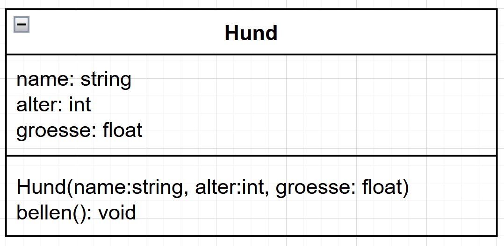

In der letzten Einheit hast du gelernt, wie man ein Objekt beschreiben kann – z. B. luna : Hund mit den Attributen name und groesse. Doch was, wenn wir viele solcher Objekte erstellen wollen? Oder wenn sie Verhalten haben sollen – also Methoden wie bellen() oder wachsen()?
Genau dafür brauchen wir Klassen: Sie sind die Baupläne für Objekte. Mit einer Klasse kannst du beliebig viele gleich aufgebaute Objekte erzeugen, die sich nur in ihren Attributwerten unterscheiden.
Eine Hundeschule möchte ihre Hunde verwalten. Jeder Hund hat einen Namen und eine Rasse und kann bellen. Statt jeden Hund einzeln zu beschreiben, legt man einmal den Bauplan fest – die Klasse Hund. Im Video entstehen aus diesem Bauplan erst im Tafelbild, dann in Python mehrere Hunde. Achte darauf, was alle Hunde gemeinsam haben und was jeder Hund für sich hat.
Ein Programm für einen Schulgarten hat eine Klasse Pflanze mit dem Attribut name. Daraus werden drei Objekte erzeugt. Wie oft steht der Code der Klasse im Programm? Wie viele Werte für name gibt es?
Der Code der Klasse steht nur einmal im Programm. Es gibt drei Werte für name, denn jedes der drei Objekte hat seinen eigenen Wert.
Danach: Aufgabe 4.3.1 – Klasse oder Objekt?
Weiter mit Schritt 2: __init__ und self →
__init__ und self Schritt für Schritt__init__-Teil?
__init__ ist der sogenannte Konstruktor. Er wird automatisch aufgerufen, wenn du ein neues Objekt erzeugst (z. B. Hund("Luna", "Dackel")). Dort legst du die Startwerte der Attribute wie name und rasse fest.
Was passiert eigentlich bei luna = Hund("Luna", "Dackel")? Im Video läuft der Konstruktor in Thonny Zeile für Zeile. Rechts im Speicherbild siehst du, worauf self gerade zeigt (orange) und wann die Variable luna ihren Pfeil bekommt. Achte darauf, dass self beim zweiten Hund auf ein anderes Objekt zeigt.
__init__ und self (ca. 2 min)Zum Nachlesen steht die Klasse aus den Videos mit allen Schritten in Beispiel 1:
Es wird bello = Hund("Bello", "Mops") ausgeführt. Worauf zeigt self, während __init__ läuft? Was gibt print(bello.name) aus? Und was ginge schief, wenn in __init__ statt self.rasse = rasse nur rasse = rasse stünde?
self zeigt auf das neue Objekt, auf das nach dem Konstruktor auch bello verweist. Ausgabe: Bello. Ohne self. wäre rasse nur eine Variable in __init__, die danach verschwindet. Das Objekt hätte kein Attribut rasse, und bello.bellen() bricht mit AttributeError: 'Hund' object has no attribute 'rasse' ab.
Weiter mit Schritt 3: Vom Klassendiagramm zum Code →
Die UML hilft dir, die Struktur deiner Programme im Voraus zu durchdenken. Ein Klassendiagramm besteht aus drei Teilen: Klassenname, Attribute und Methoden. Hier siehst du das Klassendiagramm für Hund:

Und hier noch einmal ein konkretes Objekt der Klasse:
Im Video wird das Klassendiagramm Akku aus Beispiel 2 Teil für Teil in Python übersetzt und dann getestet. Achte darauf, wo im Code self dazukommt, obwohl es im Diagramm nicht steht, und was void und string als Rückgabetyp bedeuten. Neu ist die Funktion min; sie wird im Video kurz gezeigt.
Zum Nachlesen: die Klasse Akku mit allen Schritten und Testfällen.
Ein Klassendiagramm Lampe hat die Attribute ort: string und an: bool sowie die Methoden Lampe(ort: string) und schalten(): void. Gib die Kopfzeilen der Klasse und der beiden Methoden in Python an. Was muss in __init__ mit dem Attribut an geschehen?
class Lampe:, def __init__(self, ort): und def schalten(self):. schalten braucht kein return (void). Da an kein Parameter des Konstruktors ist, bekommt es in __init__ einen festen Startwert, z. B. self.an = False.
Danach: Aufgabe 4.3.2 – Baue eine eigene Klasse.
Alltag: In einem Onlineshop ist jedes angezeigte Produkt ein Objekt der Klasse Produkt mit Name, Preis und Lagerbestand – Tausende Objekte, ein Bauplan.
Beruf: Softwareentwicklerinnen und -entwickler zeichnen Klassendiagramme mit Werkzeugen wie draw.io, Enterprise Architect oder direkt in der Entwicklungsumgebung. In vielen Firmen werden Klassendiagramme in Code-Reviews und in der Dokumentation verwendet, damit neue Teammitglieder schnell verstehen, wie ein System aufgebaut ist.
Eine Klasse ist der Bauplan, nach dem beliebig viele Objekte (Instanzen) erzeugt werden. In Python legt class Name: die Klasse an. Der Konstruktor __init__ läuft bei jedem Name(…) automatisch; self ist dabei das gerade entstehende Objekt, und self.attribut = wert speichert die Startwerte im Objekt. Beim Methodenaufruf objekt.methode() ist self das Objekt vor dem Punkt. Aus einem Klassendiagramm wird so: Name → class, Konstruktor → __init__, Attribute → self.…, jede Methode → def methode(self, …).
Klasse: Der Bauplan. Sie legt fest, welche Attribute und Methoden ihre Objekte haben.
Objekt (Instanz): Eine konkrete Ausprägung einer Klasse. Das Erzeugen eines Objekts heißt Instanziieren.
Klassendiagramm: Zeigt den Bauplan mit Attributen (Eigenschaften) und Methoden (Verhalten).
Objektdiagramm: Zeigt ein konkretes Objekt mit den tatsächlichen Werten seiner Attribute.
Entscheide jeweils, ob eher eine Klasse oder ein Objekt beschrieben wird: (a) Auto, (b) der rote VW mit dem Kennzeichen DD-IN 2026, (c) Schüler, (d) Lea aus dem Informatik-LK, (e) Buch „1984“ in der Schulbibliothek mit der Signatur B-117.
Überlege dir eine eigene Klasse, z. B. Auto, Buch, Spieler oder etwas aus deinem Alltag.